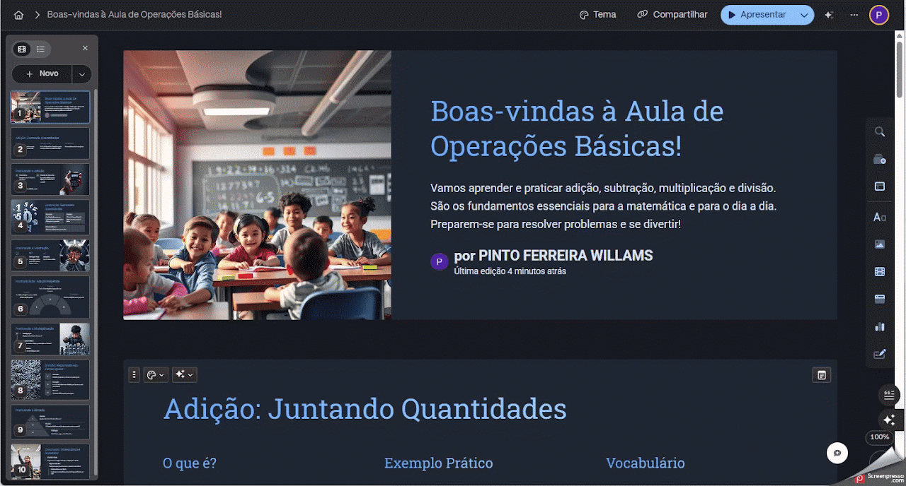

Gamma.app
Criar apresentações dinâmicas com apoio de IA para uso geral na prática docente.
Ficha técnica
Visão geral
O que é o Gamma.app?
O Gamma.app é uma ferramenta online que utiliza inteligência artificial para auxiliar na criação de apresentações, documentos e páginas web. Com uma interface amigável, permite que usuários gerem conteúdos visualmente atraentes em poucos minutos, mesmo sem experiência prévia em design.
Fluxo de uso
Como utilizar o Gamma.app
Etapa 1
Cadastro
- Acesse o site: https://gamma.app.
- Clique em “Sign up for free” no canto superior direito.
- Cadastre-se com sua conta Google ou email e senha.
- Confirme o e-mail clicando no link enviado pela plataforma.

Etapa 2
Criando um novo projeto
- Acesse o painel principal após login.
- Clique em “Criar Novo”.
- Escolha: Gerar; Colar texto; importar arquivo ou URL.
Etapa 3
Gerando conteúdo com IA
- Digite um tema e deixe que a IA gere o conteúdo.
- Ou cole um texto.
- Ou importe um documento ou URL.
- Após a geração, edite e personalize o conteúdo.

Etapa 4
Personalização e edição
- Use o editor para adicionar textos, imagens, vídeos e gráficos.
- Utilize o menu lateral para acessar modelos de cartões, blocos de destaque, layouts e outros recursos.
Etapa 5
Exportação e compartilhamento
- Exporte como PDF, PowerPoint ou PNG.
- Publique como página web com link direto.
- Compartilhe com colaboradores em tempo real.

Boas práticas
Dicas adicionais
- O uso da IA consome créditos (ex: gerar uma apresentação consome 40 créditos).
- Planos pagos oferecem recursos extras como domínios personalizados.
- Apenas usuários pagantes podem editar em tempo real.